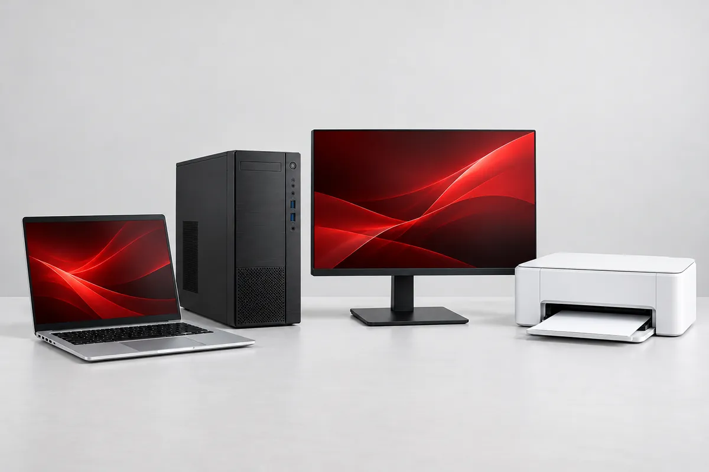
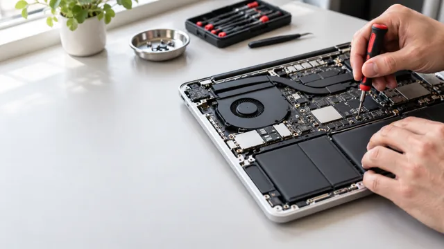

Bem-vindo à Micro Digital Informática
Tecnologia perto.
Solução de verdade.
Informática, equipamentos e assistência técnica para acompanhar o seu dia a dia.
Em Dourados, desde 1995.
Seu equipamento
merece cuidado.
Da manutenção do computador aos eletrônicos da sua rotina. Encontre o atendimento que você precisa.
Computadores e notebooks
Computadores
Limpeza interna, formatação, recuperação de dados, reparo de placa-mãe e instalação de programas e peças.
Pedir orçamentoNotebooks
Reparo de placa-mãe, BGA, telas e fontes. Limpeza, formatação, recuperação de dados e acessórios.
Ver reparos de notebooksImpressoras e monitores
Impressoras
Conserto de impressoras laser, jato de tinta, matriciais, térmicas e fiscais.
Pedir orçamentoMonitores
Troca de telas e reparo de placas lógicas, fontes e cabos.
Pedir orçamentoNobreaks e energia
Catracas e relógios de ponto
Catracas eletrônicas
Conserto e troca de peças de catracas Topdata, conforme os serviços publicados pela loja.
Pedir orçamentoRelógios de ponto
Conserto e troca de peças de relógios de ponto Topdata. Consulte o atendimento para o seu modelo.
Pedir orçamentoOutros eletrônicos
Hoverboards
Conserto de hoverboards. Informe o modelo e o problema para consultar a equipe.
Pedir orçamentoTeclados e órgãos eletrônicos
Revisão interna, troca de membranas e conserto de placas.
Pedir orçamento
Para trabalhar,
criar e conectar.
Escolha uma categoria e converse com a loja sobre modelos e disponibilidade.

Informática para o dia a dia
Impressão e proteção
Acesso e gestão de ponto
Outras soluções
Conte o que você procura.
A equipe ajuda a encontrar as
opções.

Reparos de notebooks
Mais vida para
o seu notebook.
Placa-mãe e BGA
Reparo de placas e troca de BGA.
Tela e estrutura
Troca de tela, conserto de dobradiças e carcaça.
Limpeza e dados
Limpeza, formatação e recuperação de arquivos.
Do HD para o SSD
Consulte a substituição compatível com seu equipamento.
Conte o modelo e o que está acontecendo. Peças, prazo e valores dependem de confirmação da equipe.
O começo da nossa história.
De Dourados.
Para o seu dia a dia.
A Micro Digital Informática foi fundada em 1995. Sua história reúne experiência em montagem, instalação e assistência técnica de equipamentos de informática, periféricos e eletrônicos.
Tecnologia faz parte da rotina. Nossa proposta é ajudar você a cuidar dela, com atendimento próximo e soluções para cada necessidade.
Blog • Dicas da Micro Digital
Tecnologia também
se aprende.
Leia as quatro publicações da empresa sobre cuidados com notebook, teclado e memória. Conteúdo de 2023, sujeito à revisão editorial.
Explorar o blogVamos conversar?
Falar no WhatsAppHorário de atendimento
08h às 18h
Dias de atendimento a confirmar com o dono.
Em Dourados, desde 1995.
Trabalhe conosco
Tem interesse em fazer parte da equipe? Envie seu currículo.